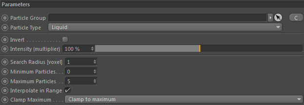
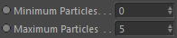

Parameters
Parameters

Particle Group

The particle group used to find the particles (in the radius defined by Search Radius) and to calculate the amount of found neighbors.
Paricle Type

The particle type to use from the Particle Group for the search.
Search Radius [voxel]
The radius (around a currently processed position) to find the particles in. Particles further than this distance are automatically excluded.
Minimum Particles

The minimum amount of particles found. Defines the range start.
Example:
If you have Minimum Particles set to 3 and 1, 2 or 3 particles are found inside the search radius, the resulting constraint intensity will always be 0%. Only particle counts bigger than 3 will result in a non-zero intensity.
Particle counts between Minimum and Maximum Particles will return values between 0% and 100% if 'Interpolate in Range' is activated. Otherwise 100%.
If you have Minimum Particles set to 3 and 1, 2 or 3 particles are found inside the search radius, the resulting constraint intensity will always be 0%. Only particle counts bigger than 3 will result in a non-zero intensity.
Particle counts between Minimum and Maximum Particles will return values between 0% and 100% if 'Interpolate in Range' is activated. Otherwise 100%.
Maximum Particles
The maximum amount of particles found. Defines the range end.
Particle counts between Minimum and Maximum Particles will be between 0% and 100% if 'Interpolate in Range' is activated. Otherwise 100%.
Interpolate in Range
By default this constraint returns either a value of 0 or 1. Activating this option will instead return an interpolated value.
Example:
'Minimum/Maximum Particles' is set to 0 and 4 respectively.
Now if the constraint finds 2 particles inside the given 'Search Radius' the constraint would by default return 1.0 because 3 is inside the Min/Max range. Activating this option it would return 0.5 instead (= Found/Maximum = 2/4 = 0.5)
'Minimum/Maximum Particles' is set to 0 and 4 respectively.
Now if the constraint finds 2 particles inside the given 'Search Radius' the constraint would by default return 1.0 because 3 is inside the Min/Max range. Activating this option it would return 0.5 instead (= Found/Maximum = 2/4 = 0.5)
Clamp Maximum
By default the constraint returns either a value of..
0.0
1. particle count inside search radius is smaller than 'Minimum Particles'
2. particle count inside search radius is bigger than 'Maximum Particles' and 'Bounded Maximum' is set to 'Clamp to Minimum'
1.0
1. particle count inside search radius is >= 'Minimum Particles'
2. particle count inside search radius is <= 'Maximum Particles' if 'Bounded Maximum' is set to 'Clamp to Minimum'
1. Unbounded - constraint's output is not clamped
2. Clamp to Maximum - constraint's output is clamped to 1.0
3. Clamp to Minimum - constraint's output is clamped to 0.0 (only in case if more particles were found)